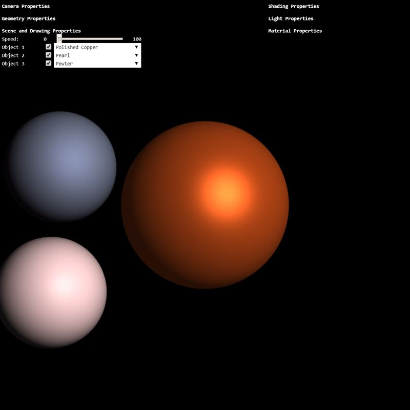

New Jersey Institute of Technology: CS 438 002
Interactive Computer Graphics Spring 2020
TASKS
There are 3 Tasks. The html-js file pair is named accordingly: (task3.html, task3.js). Additionally, there is a file containing the shaders called "task3.glsl".
Search for TODO_A3 in the task3.js and task3.glsl to find the location where to implement the tasks. You will also find the instructions for each task as comments in the code.
Hints:
-
Note that all angle-values from the GUI-sliders are given in degrees. Low-level functions, like
Math.sin(x), however, take radians as input. Convert degrees to radiants usinglet rad = radians(deg); or let rad = deg * Math.PI / 180.0; - You can create transformation matrices using the helper-functions in 'math.js'. Recall that to compute a transformation matrix the order matters! Also, note that the functions in 'math.js' take angles in degrees as input.
-
In application code, you can multiply a 4x4 matrix with a 3d point/vector by extending the
point/vector to a 4d point/vector using the
vec4structure, e.g.,let a = vec3(); // defines a 3d structure
let b = vec4(a,1); // gives a 4d point with first 3 components taken from a. -
You can get a 3d point/vector from a 4d structure using the
splice(0,3)method, e.g.,let a = vec4(); // defines a 4d structure
let b = a.splice(0,3); // obtains first 3 components of a and provides a 3d structure -
Similarly, in GLSL code, you can extend the objects in the same manner and get their components
as
vec4 a = vec4(0,0,0,1);Check out the OpenGL ES 2.0 quick reference card for further overview of the GLSL build-in functionality.
vec3 b = a.xyz; - Start early! This assignment is more involved.
Notes:
- The documentation (below the WebGL canvas) of your soltution also contributes to the grading. If you do not documente your work, points will be deducted.
- In tasks where your creativity is asked, you are not judged for your artistic skills. Only technical issues influence the grading.
- If you have questions regarding the assignment, post them on the CANVAS forum where they will be answered. Do not write emails with individual questions!
Task 1a: View-Transform (6 points)
Implement the view-transformation matrix of the camera. Given the values of
rotx, roty, rotup, dist, implement a simple control of the location of the camera by
computing a transformation matrix for the eye location and the up vector.
To create this transformation, you would need to multiply a number of transforms, and subsequently
use it for transform the eye and up.
E.g., (be careful, pseudo-code here):
eye = M * [0,0,0,1].splice(0,3);
up = M * [0,1,0,0].splice(0,3);
Hint: for better orientation during implementation, turn on the coordinate frame axes (checkbox 'Coord. Frame') and turn off (checkbox in front of the objects) Object 1.
Having the position of the eye and the up vector, you can use the
lookAt function to determine the view-transform from eye, up, at!
Task 1b: Perspective Projection (2 points)
Using the given values of dist, fovy, near, far, implement the perspective
projection matrix and replace the standard projection matrix below.
Task 1c: Orthographic Projection (4 points)
Using the given values, implement the orthographic projection matrix and replace the standard
projection matrix below. Derive the values for left, right, top, bottom from
dist and
fovy. Why can't you use the near-value from above? Replace near with appropriate value.
Task 2a: Transformation to View-Space (4 points)
Hint: Task 2a is to be implemented in the file 'task3.glsl' using GLSL!
Transform the position of the vertex a_position to the view space using the model-view
matrix. Set the varying v_pos with the transformed value. Next, transform the
normal-vectors a_normal to
the view space using the transpose-inverse-view matrix denoted here as u_normalmat".
Set the varying v_normal.
Task 2b: Phong Reflection Model (6 points)
Hint: Task 2b is to be implemented in the file 'task3.glsl' using GLSL!
Implement the Phong reflection model (Phong lighting). Compute the diffuse, specular, and ambient
terms usinf the input arguments
vec3 N; // normalized normal vector of the surface point
vec3 L; // normalized vector towards the light source
vec3 r; // distance to the light source
Task 3: Material Design (3 points)
Create three new materials and add them to the material manager object. Experiment with the sliders in the GUI and be creative! There is no right or wrong material setting for Phong Model, just try to make it look as good as possible.- Create a metal-like material, for instance "Polished Copper".
- Create a glossy material, e.g., "Pearl".
- Create a matte material, for instance "Pewter".
Results
Your result should look similar like on the image below:

WebGL Canvas
Documentation
I implemented the view-transformation matrix of the camera using the values of rotx, roty, rotup, and distance that I got from the sliders. I multiplied the camera's transformation matrix by these values to get the right position.
Using slider values I altered the perspective projection matrix by utilizing field of view Y, the near value, and the far value
Using the values that we needed for perspective, I calculated the top, bottom, left, and right values that I used to implement the orthographic view.
I also made Polished Copper, Pearl, and Pewter materials by rearanging the material examples we were given
I was able to calculate the diffuse, specular, and ambient component for phong Lighting using the normalized vector towards the viewers eye, the normalized normal vector of the surface point, the normalized vector towards the light source, and the distance of the light source, all as parameters
I set the varying v_pos to the view space using the model-view matrix. I also Set the varying "v_normal" to the view space using the transpose-inverse-view matrix.
Good luck!
Instructor: Assoc. Prof. Dr. Przemyslaw Musialski
Email: przemyslaw.musialski@njit.edu